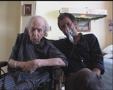

|
PETIT POW! POW! NOËL (Yule Croak)
Robert Morin | Kanada 2005 | 91 Min.
Format: BetaSP
Material: DV
Originalsprache: Französisch
Drehbuch: Robert Morin
Kamera: Robert Morin
Schnitt: Sophie Leblond, Martin Crépeau
Ton: Louis Collin, Stéphane Bergeron
Mit André Morin, Robert Morin
Produktion: Coop Video Montréal
Verleih: Fun Films
Prix de la Main, Festival du nouveau cinéma, Montréal 2005
Deutsche Erstaufführung
Fake Shockumentary über einen Filmemacher, der am Weihnachtsabend mit seinem 80-jährigen, ans Bett gefesselten Vater abrechnet. Während seines langen, für den Vater peinvollen Aufenthalts am Krankenbett, rächt sich der Sohn an den erlittenen Erziehungsmethoden. Morin hat seine Film-Provokation mit dem eigenem Vater an dessen Sterbebett gedreht. Ein ungewöhnlicher, schockierender und am Ende überraschender Pakt zwischen einem Regisseur und seinem Protagonisten.
Robert Morin, Mitbegründer von Coop Vidéo, Montréal, 1977. Morin hat um die dreißig Lang- und Kurzfilme gemacht. Schon früh in seinem Filmschaffen entwickelte er den „Morin-Touch“, mit subjektiver Kamera hergestellte Vexierbilder, in denen Fiktion und (scheinbare) Dokumentation zusammenfinden. Seine Filme haben zahlreiche Preise gewonnen. Über den kanadischen Meister des Mockumentary und Fake Shockumentary gab es umfassende Retrospektiven in Québec, Brüssel oder Marseille.
Filme (Auswahl): Même mort il faut s'organiser 1977 | The Mysterious Paul 1983 | Scale-Model Sadness 1987 | The Reception 1989 | Requiem pour un beau sans-coeur 1992 | Yes Sir! Madame... 1994 | Whoever Dies, Dies in Pain 1997 | Petit Pow! Pow! Noël 2005 | May God Bless America 2005
zurück
|